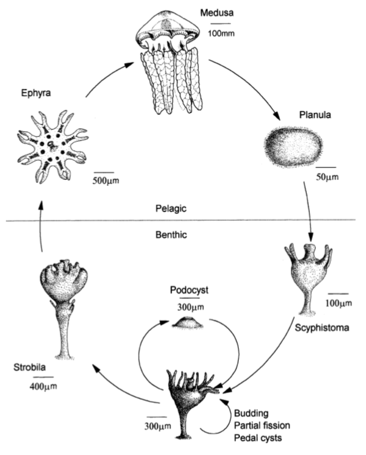
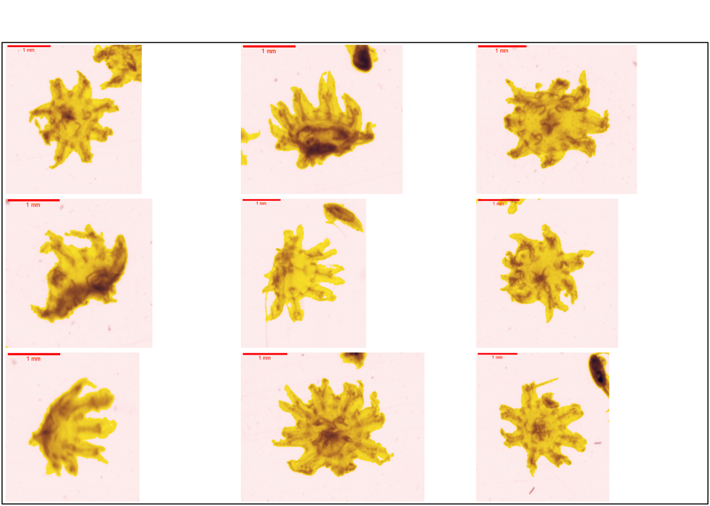

1 Cnidaria
Les Cnidaria est un embranchement d’eumétazoaires à symétrie radiaire. Ce sont des organismes aquatiques, principalement marins, possédant des cellules caractéristiques, les cnidocytes qui sont des cellules ectodermiques urticantes. Il existe deux formes différentes de morphologie chez les cnidaires : polype et méduse. Certaines classes de cnidaires seront uniquement présentes sous formes polypes tandis que d’autres passeront par les deux stades. Une grande partie des cnidaires adoptent des formes coloniales constituées de zoïdes. Lors de leur cycle de vie, ces organismes passeront par un stade de larve appelée planula. Cet embranchement est divisé en 2 superclasses, les Meduzoa et les Anthozoa, elles-mêmes divisées en différentes classes et sous-classes (Ruppert, Fox, et Barnes 2004).
La phylogénie des cnidaires, notamment pour les Meduzoa, porte toujours à débat. La classification employée (Figure 1.1) sera celle proposée par Kayal et al. (2018) .
1.1 Scyphozoa
Les scyphozoaires sont les cnidaires communément appelés méduse. Ce sont des organismes principalement pélagiques dont le cycle de vie ( Figure 1.2) passe par différents stades, à la fois benthiques et pélagiques (Conway 2012).

Les méduses adultes se retrouvent dans l’océan principalement au printemps et en été. Elles produisent des œufs qui vont donner une larve planula. Cette larve ciliée reste peu de temps sous forme planctonique et va se fixer sur une surface pour donner une scyphistoma qui va produire des stolons qui bourgeonneront pour donner d’autres individus par reproduction asexuée. Au début du printemps, par processus de strobilisation, le scyphistoma va se diviser en plusieurs disques qui resteront un temps attachés en un strobila. Petit à petit, ces disques vont se détacher pour donner une nouvelle phase pélagique, la larve éphyra (Kavanau 2006).
Certaines éphyras peuvent attendre plus de deux ans pour donner une nouvelle méduse adulte (caractérisée par la capacité de pouvoir faire de la reproduction sexuée) (Ruppert, Fox, et Barnes 2004)
Dans le cadre de ce guide, seuls les individus au stade éphyra sont pris en compte. Les larves éphyras ( sont des organismes planctoniques caractérisés par une symétrie radiaire à 8 rayons (Quivy, Thomas 2018). Elles sont donc facilement reconnaissables sur une vignette, mais il serait intéressant de pouvoir distinguer différentes larves éphyras provenant de différents scyphozoaires. Les larves éphyras sont produites suite au phénomène de strobilisation qui est déclenché principalement par la disponibilité en nourriture et la température. Les larves éphyras sont abondantes principalement en Mars/Avril mais ce stade dure parfois jusqu’en hiver (Conway 2012).
Le centre de l’organisme est constitué du manubrium (portant la bouche), de l’estomac divisé en 4 lobbes et de 4 filaments gastriques. Chaque bras contient en son centre un canal rabial constitué des muscles radiaux. Chaque extrémité des bras contient un tentaculocyste ou rhopalie qui est un organe sensoriel servant principalement à la vue et l’olfaction (Figure 1.3 ).
Il existe différentes classifications pour la classe des Scyphozoa. En effet certains scientifiques considèrent cette classe comme étant sœur des Cubozoa, tandis que d’autres incluent ces dernières dans les Scyphozoa. Pour ce guide les Cubozoa seront considérés comme n’étant pas inclus dans les Scyphozoa mais comme étant une classe sœur, tendance soutenue par la plupart des études récentes (Kayal et al. 2018; Yamamori et al. 2017).
Trois ordres de Scyphozoa sont donc considérés :
Semaeostomeae
Rizostomeae
Coronatae
Il serait intéressant de pouvoir distinguer les larves éphyras de ces 3 ordres de Scyphozoa. Malheureusement il s’avère que la littérature est assez pauvre quant à l’étude du cycle de vie des schyphozoaires, en particulier sur les stades pélagiques. De plus au vue des grandes similarités morphologiques entre les stades éphyras des différentes espèces, l’identification sur base de ce stade est difficile (Tronolone, Morandini, et Migotto 2002). La difficulté sur base de la morphologie pour ces larves est accrue du fait qu’elles soient encore en développement et que la morphologie est encore sujette à de nombreux changements, les organismes Pelagia voient par exemple leurs nombres de filaments gastriques passer de 4 à 8 en 76 jours (Tronolone, Morandini, et Migotto 2002). Les éphyras fraîchement libérées sont extrêmement semblables et de ce fait difficilement discernables (Conway 2012).
Après l’analyse des vignettes, il s’avère qu’aucune Coronatae n’a été identifiée. La distinction entre les Semaeostomeae et les Rizostomeae se base principalement sur la morphologie des canaux radiaux et adriaticaux. Cela rajoute une difficulté car il faut que l’organisme soit bien disposé pour bien identifier ces morphologies.
- Les Semaeostomeae : les méduses adultes de cet ordre font de 10 à 30 cm en moyenne et sont constituées de 4 bras. Les larves ephyra possède une structure des conaux radiaux et adriaticaux particulier (Figure 1.4). Cet ordre comprend plus de 50 espèces avec entre autre, Aurelia aurita (Ruppert, Fox, et Barnes 2004)
La Figure 1.5 propose des vignettes supplémentaires.
plot_vignettes(vigns, group = "semaeostomeae")- Les Rhizostomeae : les larves ephyra possède une structure des conaux radiaux et adriaticaux particulier ( Figure 1.6 ). cet ordre est constitué de 80 espèces de méduses dont les Cassiopeia, communes dans les régions chaudes du globes (Ruppert, Fox, et Barnes 2004).
La Figure 1.7 propose des vignettes supplémentaires.
plot_vignettes(vigns, group = "rhizostomeae")